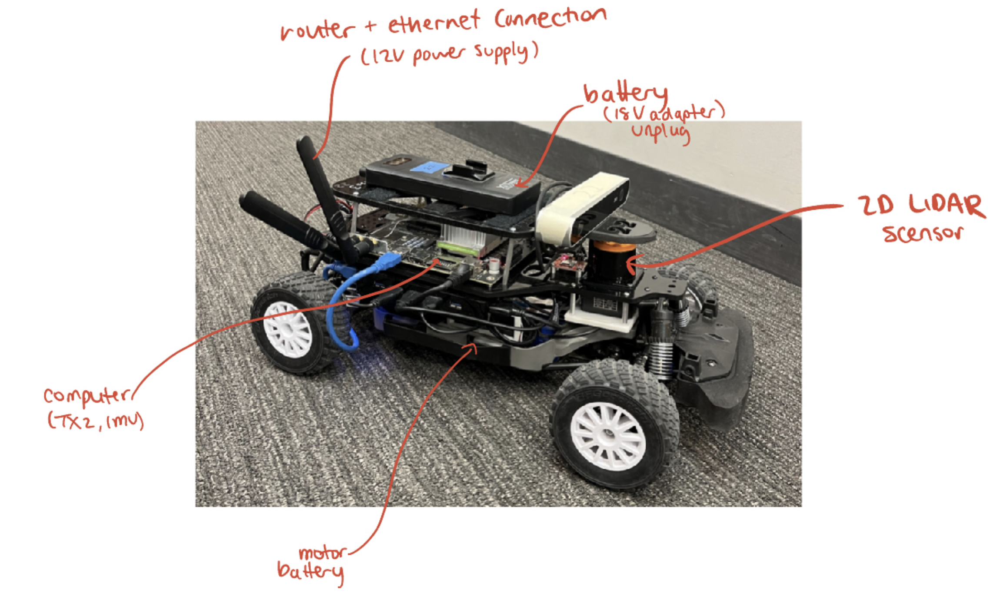
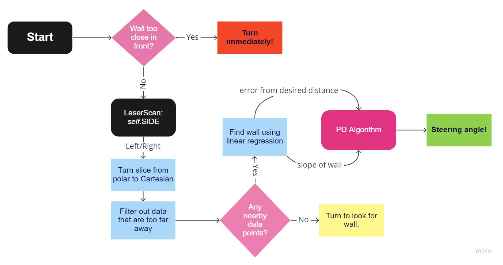
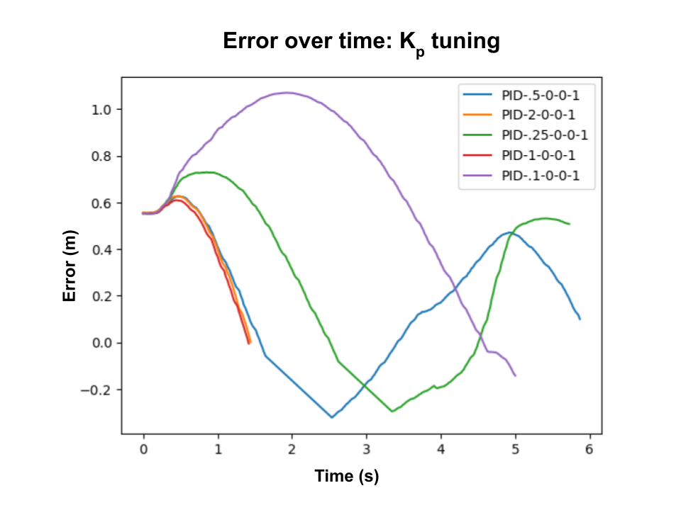
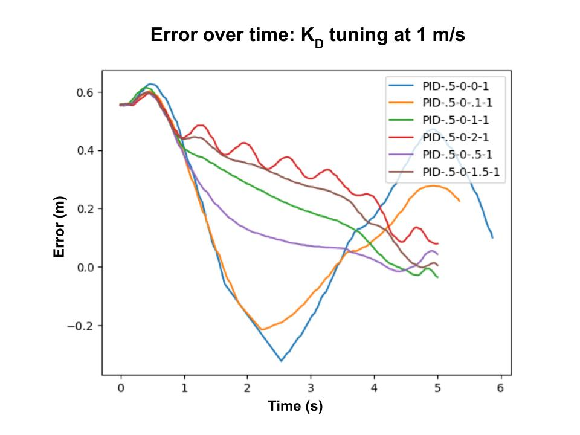
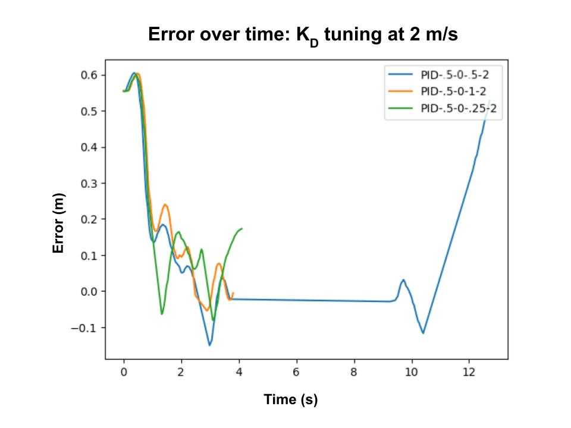
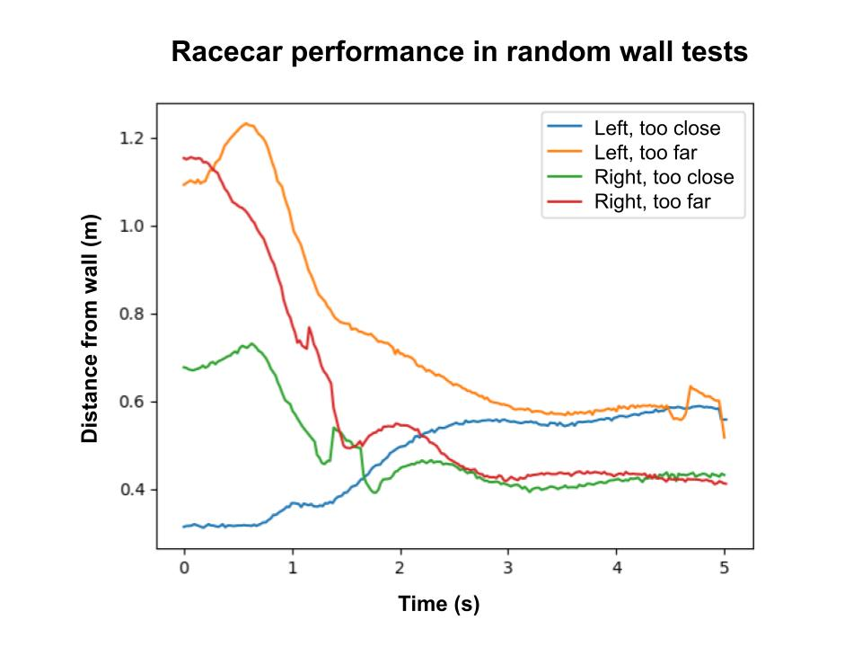
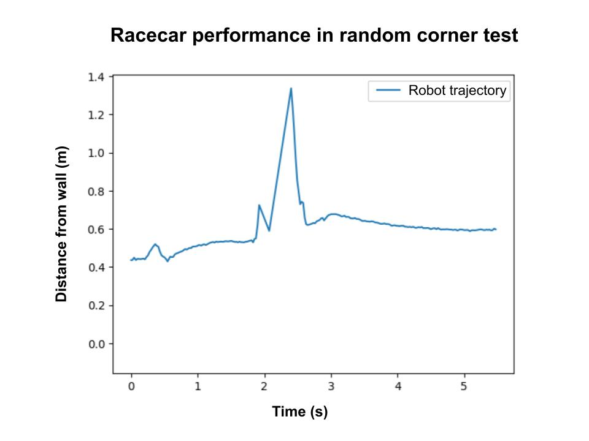

Lab 3: WallFollow your Dreams
Introduction
Challenges
We were tasked with programming a miniature racecar to drive parallel to a wall at a specified distance. This car was also required to have a safety controller to prevent it from driving into people and objects. We were given the ability to send driving directions to the car via an on-board program. The car has a 2-dimensional LiDAR scanner which informs the driving decision making. In addition to driving along walls and providing a safety mechanism, the car needed to follow non-linear walls, turn inner and outer corners, and prevent significant deviation from the desired distance from the wall. To accomplish this goal, our first task was to implement a method for collaborating on our code. We needed a system to share and merge our code, as well as upload it onto the racecar’s computer. The second task was to create and implement an algorithm for a wall follower that could drive the robot at a desired distance from a wall with minimal oscillation along straight edges, as well as turn inner and outer corners with minimal deviation from the desired distance. The highest-performing parts of our individual simulation programs needed to be combined into one wall follower, and the LiDAR data needed to be processed with different parameters than in our simulations due to its imperfections. The last task was to create a safety controller algorithm that would override any autonomous movements if there was an instance that the racecar should stop. This ensured that our expensive and powerful racecar would be safe to operate throughout this lab and any testing in the future.
Motivations
Motivations for lab 3 included learning how to establish connections between our computers and the racecar and ensuring that all team members knew how to upload and download code from the cars. Additionally, we needed to learn how to create autonomous algorithms that run both effectively and safely in a world where input data is almost always noisy. Building interpersonal connections between team members was also important for this lab, as this was the first time we were working together. Learning more about each others’ strengths, technical backgrounds, and work styles helped us more smoothly collaborate on our code and accomplish deliverables faster.
Technical Approach
Robot Setup and Robot-Computer Connection
In order to familiarize ourselves with the hardware necessary for this lab and determine its functionality, we followed the tutorial provided in the README.md file in the mit-rss wall\_follower repository. We first identified the robot’s two batteries, one for the motor and the other for the microcontroller and the sensor, and determined how to turn them on and connect them to the appropriate components (Figure 1). Next, we identified the robot’s computer and connected it to a lab member’s computer. The connection between a robot and a computer is based on a wifi network from a nearby router, and both devices must be logged onto the network to allow for code to be downloaded from and uploaded to the robot using Remote Sync (rsync), a tool used to sync files between remote and local servers.
To test the functionality of all the robot components, we used teleop (a set of scripts to allow teleoperation) to connect a controller to the robot. We then manually operated the robot to test forwards and backward driving, as well as turning right and left.
Wall Follower Algorithm Development and Optimization
Our wall follower algorithm takes LiDAR data as input. The LiDAR input came from the Hokuyo LiDAR device mounted on the front of the robot. This algorithm processed the data similarly to the wall followers we each wrote for Lab 2: we collected and filtered distance data from the LiDAR sensor to ensure that the robot was only looking at data in a relevant range, estimated the robot’s error from its ideal path, and adjusted the steering angle using a proportional-derivative (PID) controller. In order to reduce noise in our sample data, we filtered out points that were too far from the robot. We knew that the scope of this lab did not require that our robot find walls further than 3 meters away, so any LiDAR data that indicated a point greater than 3 meters away from the robot was discarded. Then, we divided all of the LiDAR data into three sections—right, left, and front (Figure 2). We read data from either the left or right section, depending on a variable parameter, and converted it from polar into cartesian coordinates for more convenient calculating in subsequent steps. Next, we used those points to estimate the location of the wall with a straight line using least-squares linear regression. We then add our desired distance from the wall to find our robot’s desired path.
We assume that this estimated desired path is very close to the optimal path of our robot. We calculate the error of the robot, defined as the distance from its optimal path, and use the error to determine how the robot should turn to minimize that error. And this process is the core of our wall-following algorithm. In addition to that, we also inserted two edge case checks in the algorithm. For one, the robot may be swiftly approaching the wall in the front, which the left/right side data does not inform us of. So we add a check at the very beginning that the robot steers away immediately if it detects a wall in front. We also added a check after filtering the data in case it does not detect any walls around itself, in which case it turns at a preset angle in search of a wall. The final decision-making process our robot follows is visualized in figure 3.
Tuning PD Control Constants
Using a Proportional Derivative (PD) controller with the error and its derivative over time, we decreased the racecar’s deviation from the desired path. The derivative of the error was included in order to prevent overcorrection as the car approached its desired path. We chose a PD controller because almost all group members found it to improve wall following accuracy in our simulation as opposed to Proportional control (not including the derivative of the error), but did no better than Proportional Integral Derivative (PID) control, a more complex controller that also includes the integral of the error. The equation we used to calculate the adjusted error is

A(t) = K_P*e(t) + K_D*(d/dt)*e(t)
With Kp representing the weight of the actual error and Kd representing the weight of the derivative of the actual error over time, we manually adjusted the constants used in the PD controller formula to minimize racecar oscillation and aggregate error at different speeds, starting angles relative to the wall, and wall following distances.
Designing and implementing the safety controller
For our safety controller, we collected information from the front region of the LiDAR scan, (Figure 2). We iterated through the scan, searching for data points below a minimum threshold, defined as T_{stop} = K_v*v_{car} With T_{stop} being the distance (m) the car stops away from the wall, K_v being a constant we manually adjusted and tested, and v_{car} being the current speed of the racecar. This threshold is designed to provide enough braking distance for the car to stop before making contact with an obstacle in front of it.
If three consecutive LiDAR data points were observed to be below the minimum threshold, the safety controller perceived that to be an obstacle in front of the car and would cause the car to brake. Three consecutive LiDAR data points were chosen to avoid the racecar stopping in response to noisy LiDAR data, where it was possible that one or two data points perceived to be too close were just noise. Though this method does not cancel out noise completely, it effectively reduces the impact of outlier data points caused by noise, assuming that noise affects pixels individually.
Experimental Evaluation
PD Parameter Evaluation
All parameter evaluation was done by setting the racecar parallel to a wall 1 meter away from the right side of the car. The desired wall-following distance was set to 0.5 meters, and the side to wall-follow was set to the right side. The wall following distance and wall side were kept constant for all tests and were not varied due to time constraints. The safety controller was run during all tests to protect the car from damage. All trials are labeled “PID-Kp-0-Kd-v” with Kp, Kd, and v being the same as described previously and 0 representing the use of PD control as opposed to PID control. The first step to determining the PD constants was to choose a Kp constant that allows the robot to quickly approach 0 error between its actual and desired distance away from the wall. We set Kp equal to five different values ranging from .25 to 2, and set the velocity to 1 m/s, as that was slow enough to ensure that any collisions or accidents that could happen during the test could be prevented by either our safety controller or manually lifting the car off the ground. We observed that the racecar displayed oscillations with the smallest amplitude with a Kp of 0.5, allowing the car to approach 0 error the fastest (Figure 5).
Interestingly, we found that a Kp of 2 and 5 sent the racecar into the wall (though no collision occurred because the safety controller was running during all the trials). Next, we tried values Kd ranging between 0 and 2 while keeping the Kp at 0.5. We first tried this for 1 m/s, the previous testing speed for different values of KP. We observed that the racecar displayed oscillations with the smallest amplitude with a Kd of 0.5, allowing the car to approach 0 error the fastest (Figure 6).
We then tested our values of Kp and Kd at 2 m/s to test if these constants still produced the desired behavior of the car (following the wall with minimal error from the desired distance). We observed that a KP and KD combination of 0.5 and 0.5 still enabled the car to perform its best (Figure 7).
For the test with the Kp and Kd combination of 0.5 and 0.5, we allowed the robot to turn a corner of the wall we were testing it with, and we qualitatively observed a similar pattern of oscillation as in the first four seconds of that test (though our recording was inadvertently cut off before that could occur and we were not able to make a new one due to time constraints). This supports the fact that Kp and Kd of 0.5 and 0.5 allows for our wall follower implementation to work accurately and robustly.
We chose the final values for our Kp and Kd to be 0.5 and 0.5 because that allowed for the robot to reach its desired distance away from the wall the fastest and oscillated the least on the way there, allowing for the best PD control. Additionally, we saw that these constants had the lowest error across two different speeds, suggesting that our wall follower can work effectively in multiple conditions and with various parameters.
Racecar Performance Evaluation
To test the effectiveness of our wall follower algorithm, we simulated real-life scenarios with the robot by choosing a new testing hallway location, randomly choosing 0.6 or 0.4 m as the desired distances from the wall, pointing the robot at a random angle towards or away from the wall, and then tested the robot’s performance when it started either too close or too far from the wall for either the left or the right wall being tested (Figure 8). For all four tests, the robot successfully reached the desired distance away from the wall with minimal oscillation, indicating the robustness of our wall follower with straight walls.
To evaluate the performance of our robot in corners, we placed it in a random corner (an inner corner) and randomly set the robot to follow the right wall at a desired distance of 0.4 m (Figure 9). The robot successfully completed the test, turning through the corner and approaching the desired wall following distance from the wall after the turn.
Unfortunately, we were unable to run more than one corner test due to time constraints, however our qualitative observations of the robot in runs without data collection suggest that the racecar can successfully turn both inner and outer corners without collisions and can emerge from the corner to follow the wall close to the desired distance.
Conclusion
For lab 3, our team successfully designed and implemented a wall-following algorithm that allowed our robot to follow a wall located on either the right or left side of itself. The robot can successfully turn both inner and outer corners while staying close to the desired distance from the wall, as well as find and follow a wall from a starting position away from a wall. This implementation can allow the robot to systematically traverse through uncharted spaces, such as in solving a physical maze.
After tuning our PD constants with Kp and Kd set to 0.5 and 0.5, our wall follower implementation worked well for most observed cases, including in cases where we did not collect quantitative information. Our robot effectively stayed close to the desired distance away from the wall on both the right and left side equally well and could turn both inner and outer corners without collision after which it continued to follow the wall close to the desired distance away. The only cases where we observed failure were acute inner corners, where the robot was not able to turn fast enough, and also occasionally right inner corners. Further debugging and tuning are necessary to address these issues.
Additionally, we designed and implemented a safety controller to prevent front collisions. This safety system prevents the robot from driving into stationary and dynamic obstacles and is meant to protect the robot from physical damage in the current and future labs. The safety controller we designed worked well for the entirety of this lab, as we rarely encountered collisions while testing and they were never serious enough to damage our hardware.
Though we successfully completed the challenges set by lab 3, our wall follower implementation still has multiple areas of improvement. Though our robot worked well for speeds we deemed reasonable enough for its practical use and testing, the PD control we implemented did not prevent low-amplitude oscillations at speeds greater than 3 meters. Further tuning our PD controller to work at higher speeds may be useful in the future, as our final assignment for this class is a racecourse that will presumably require higher speeds than we tested in classroom hallways. Additionally, given more time, we could have tried to test PID control in our wall follower algorithm, as PID control helps prevent the error from accumulating in the robot’s distance to the wall due to any asymmetries in its hardware that can cause it to skew slightly to one side when it should be driving straight. Though we only noticed a very small eccentricity in our robot’s driving trajectory, this may become more of a concern for future labs where our challenges require the robot to drive over longer distances.
What We Learned
For lab 3, our team successfully designed and implemented a wall following algorithm that allowed our robot to follow a wall located on either the right or left side of itself. The robot can successfully turn in both inner and outer corners while staying close to the desired distance from the wall, as well as find and follow a wall from a starting position far from a wall. Talk about data and error. This implementation can allow the robot to systematically traverse through uncharted spaces, such as in solving a physical maze. Additionally, we designed and implemented a safety controller to prevent front collisions. This safety system prevents the robot from driving into stationary and dynamic obstacles and is meant to protect the robot from physical damage in the current and future labs.